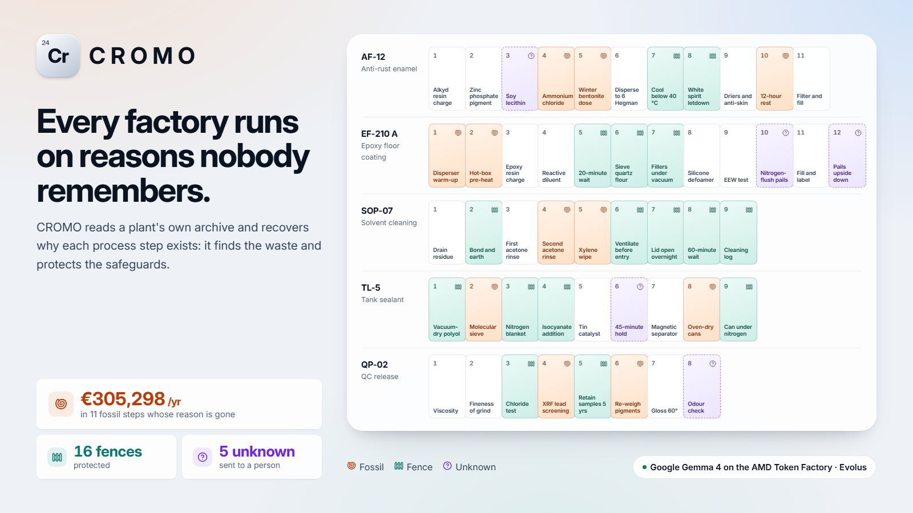
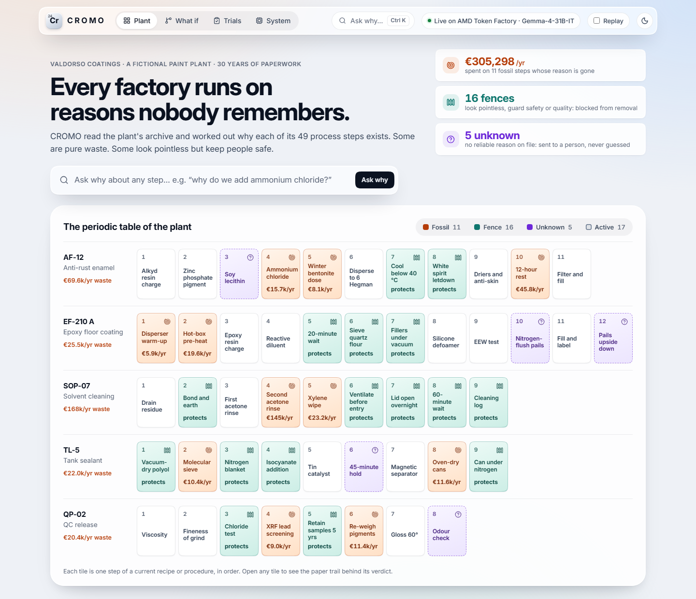
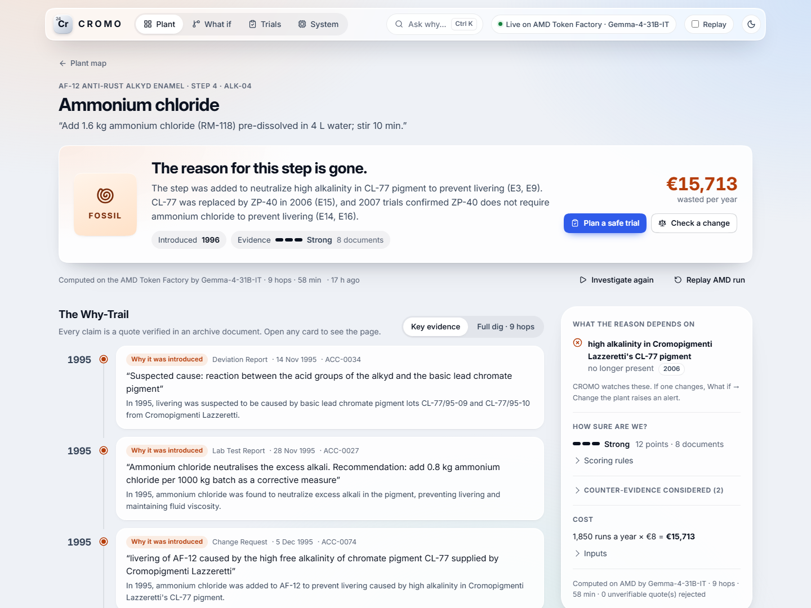
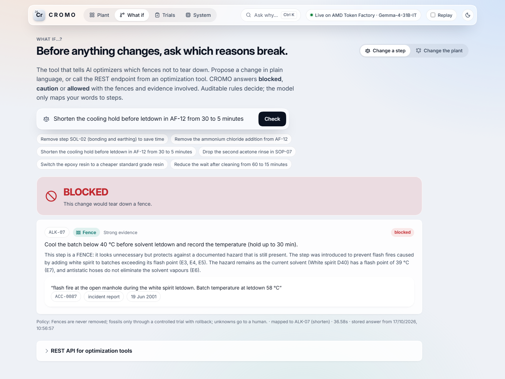
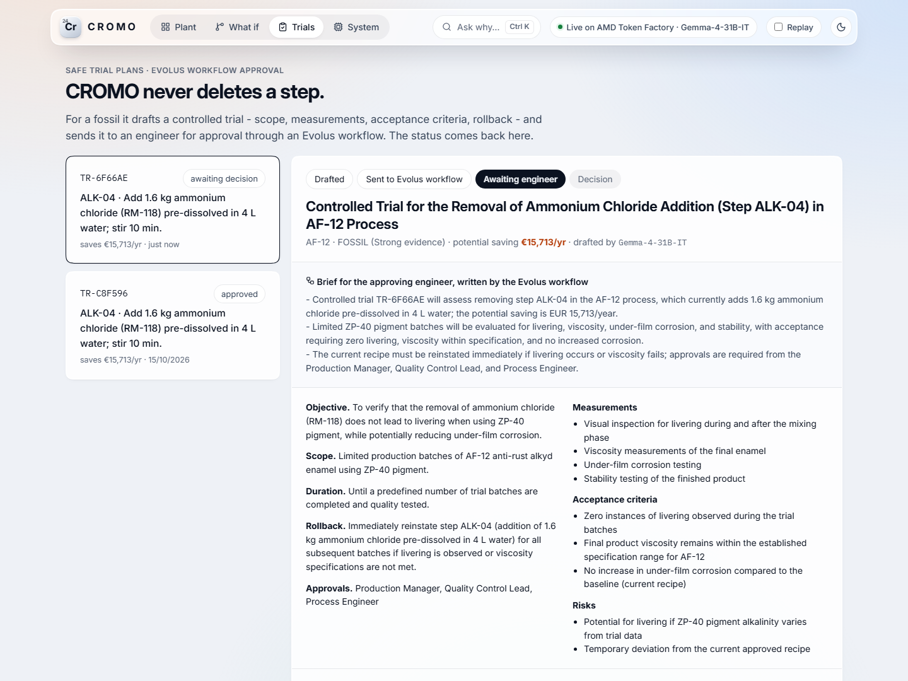

A young chemist traces it to one bad pigment delivery and fixes it by adding ammonium chloride. Twenty years later the bad pigment is long gone, and the factory still adds ammonium chloride to every batch. Nobody can say why.
The opposite also happens. Chesterton (1929): don't tear down a fence until you know why it was put up. Some steps that look pointless are load-bearing.
Cromo is Italian for chromium.
Fossils cost money every batch: material, labour, energy, tank time. Nobody dares remove them.
Fences look like waste but prevent fires, recalls and claims. Remove one and the old accident comes back.
And AI optimisers now propose "remove this, shorten that", without knowing which is which.
Users: process engineers · quality / EHS managers · plant managers. A human approves every change.

in 11 fossil steps of a synthetic mid-sized coatings plant
protected from removal
sent to a person, never guessed


Every claim cites a quote verified verbatim in the source; uncited claims are dropped.
A fossil needs proof that its reason ended and no open safety evidence; otherwise it goes to a person.
What if…? Change a step: blocked · caution · allowed with trial (also a REST API for optimisers). Change the plant: tripwires show which reasons break.
| Role | Model | Runs on |
|---|---|---|
| Vision: scans, faxes, handwritten Italian logbooks | Gemma 4 31B-IT (Google DeepMind) | AMD · image input |
| Reasoner: reads passages, follows leads, proposes verdicts | same model | AMD |
| Retrieval | BM25 + local n-grams + Gemma's bilingual keywords (no embedding model on the Token Factory) | CROMO server (CPU) |
| Verdict rules, quote verification, costs | deterministic, auditable | CROMO server (CPU) |
Gemma 4, Google DeepMind's open model, is both the eyes and the brain: one model reads every scanned, faxed and handwritten page and does all the reasoning.
| Model | Strict CER | Word F1 | handwritten logbook (n=5) | fax (n=4) | typed / scanned (n=58) | p50 / page |
|---|---|---|---|---|---|---|
| Gemma-4-31B-IT · used by CROMO | 2.2% | 97.9% | 0.7% | 7.7% | 1.9% | 16 s |
| MinerU2.5-Pro | 30.2% | 97.6% | 7.5% | 20.9% | 32.9% | 18 s |
| DeepSeek-V4-Flash-Vision-Exp | 15.0% | 94.2% | 17.3% | 14.3% | 14.6% | 11 s |
| MiniCPM-V-4.7-35B-A3B | 2.1% | 97.3% | 0.8% | 5.1% | 1.9% | 19 s |
CER = character error rate vs. the reference transcription (lower is better), reading order counted; word F1 ignores order. Gemma and MiniCPM are within 0.1 points; Gemma reads the handwritten logbooks best and keeps one model for reading and reasoning.
178 documents, 49 steps · Gemma's bilingual keywords rank the first key document higher (MRR 0.29 → 0.39).
Measured on the shared AMD Token Factory during the event, 6 requests at a time: a metadata call took 47 s at the median (p95 185 s), with outages and rejected requests in between (545 of 1351 requests during the run were rejected by the endpoint and retried). The throughput reflects the shared endpoint's load, not GPU capacity.
| Heuristic baseline (no LLM) | CROMO on AMD · Gemma 4 31B-IT (Google DeepMind) | |
|---|---|---|
| FENCE recall | 56% | 89% |
| False-FOSSIL rate | 11% | 0% |
| Fences called fossils | 1 | 0 |
| Accuracy (4 classes) | 65% | 80% |
| Citation precision | 61% | 71% |
| Prompt-injection document | ignored | ignored |
Synthetic archive: red herrings, contradictions, a reverted change, a reason only in a handwritten logbook. The product never reads the answer key (tested).

Workflow: fossil → trial plan → AI Tool brief for the engineer → approval record → decision → status back in CROMO.
AI Tool compare: what changed when a step was added. Knowledge library: the 178-document archive.
All driven through the Evolus REST API; the workflow was created via POST /workflows.
Value: in our synthetic plant, €305,298/yr of fossil steps found, with an audit trail, and every fence protected from well-meant "optimisations".
Model: per-site subscription for process industries (coatings, chemicals, food, pharma); the change-check API for MES and optimisation vendors.
Next: pilot on a real archive · veteran interviews for unknowns · MES connectors · cross-recipe fossil detection.
Team: solo developer, built with Claude Code. MIT licensed, open models, zero budget.